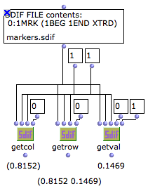
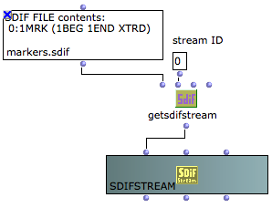
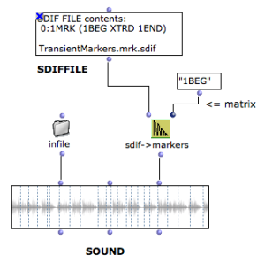
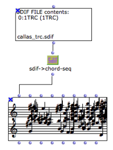

Accessing SDIF Data
There exist several ways, more or less precise and specific, to inspect and read the contents of an SDIF file in an OM visual program.
You'll probably have to know about the contents structure of the file before to extract some particular data out of it. Several tools presented in this section might help, but a quick preview of the file structure using the SDIFFile editor is generally useful.
All the tools presented in this section must be used with an SDIFFile object and can be found in the SDIF/Read/ menus or packages. See the specific reference pages for a more complete descriptions and details about the box arguments and outputs (select the box and type d).
File Overview / General Information
A set of tools allow to get some general data and information about the structure and contents of the file.
SDIFINFO provides some information about the general file structure, displayed as text in the OM Listener. A list of "matrix streams" ( stream ID , frame type , matrix type tuples) is returned. This information basically corresponds to what can be observed on the left-hand part of the SDIFFile editor. |
Note that the "real" structure of an SDIF file consists in identified frame streams in which matrices of different types are stored (and actually not "matrix streams"). This actual stream structure can also be collected using the SDIFSTREAMS box. |
The following boxes allow to get some specific information about the farmes and matrix in the SDIF file :
NUMFRAMES : number of frames of a given type (or in total) in the file
FRAMEINFO : information about frame number n (of a specific type or in total) : type signature, stream ID, time, position, number of matrices inside.
MATRIXINFO : information about matrix number m in frame number n (of a specific type or in total) : type signature, number of fields, number of components..
Note that none of these tools give you any of the actual data contained in the file, but some meta-data related to the file structure.
SDIFTYPEDESCRIPTION allows to get information about the frames and matrices of a specific type. Notes :
|
Get SDIF Data
There exist different ways to access the numerical values contained in an SDIF file. It is important, in any case, to preliminary know what we are looking for, or where to find it.
You might know exactly where to find the data you're looking for thanks to the inspection tools described in the previous sections. In this case, the functions GETCOL, GETROW or GETVAL allow you to extract the data (either a whole column, a whole row or a single value) from a matrix localized by its index in a frame and by the exact rank of this frame. |  |
The more useful and efficient way to extract data from an SDIF file is to know which type of data we want (that is, what are the frame and matrix type we are looking for).
The GETSDIFDATABOX is the definite and more general way to get your data out of the file. The main (required) arguments are the stream ID, frame type and matrix type which will allow to discriminate a particular SDIF "matrix stream". The other ones allow to target a particular time interval (begin time, end time), a particular matrix field (column number), and a particular range for the matrix components (rmin, rmax).
|
If both the values and time output are to be used, it is recommended to set the GETSDIFFILE box to mode "eval-once" so as to avoid to read and store the data twice for the same box.
Instead of getting numerical values out of the SDIF file, the GETSDIFSTREAM function can also create and return an SDIFSTREAM object. SDIFSTREAM is part of the classes provided in OM to represent and manipulate SDIF data. SDIFFRAMES and SDIFMATRICES can extracted from and SDIFSTREAM and manipulated as well in OM visual programs. Some tools are also provided to write a new SDIF file using these SDIF structures. |  |
High-Level Conversion Tools
Some commonly used SDIF descriptions can be straightforwardly converted to specific OM data or objects. A number of predefined functions allow to make this conversion for you.
Temporal markers may be contained in SDIF descriptions, for instance in the results of transient detection analysis. SDIF->MARKERS extracts the time values of marker frames and returns them as a simple list of values in seconds. This list can for instance be connected to the markers input of a SOUND object, containing the original sound file. By default, markers are extracted from all frames of type "1MRK". This default type can be changed, however, using the SDIF->MARKERS additional inputs. It is also possible to refine the markers extraction by specifying a specific matrix type to target. You may want, for instance, to extract only the transient begin markers (matrix type "1BEG") and not the transient ends (type "1END") from the 1MRK frames. |  |
Some SDIF descriptions consist of a single scalar parameter, which can easily be extracted and converted to a BPF object. This is typically the case of the fundamental frequency analyses. The SDIF->BPF function allows to directly perform this conversion. If the SDIF data is not a fundamental frequency (frame or matrix type is not "1FQ0"), then the additional inputs of this function allow to consider different types of frames and matrices. |
"Chords" can be extracted from SDIF data, either from "1TRC"/"1HRM" frames (inharmonic/harmonic partials or sinusoïdal track descriptions) or from "1MRK" frames containing chord-sequence analyses.
Two main functions allow to extract chords (or, more precisely "notes") from the partials in an SDIF file. 1) GETSDIFCHORDS returns a list of ( pitch [Hz] onset [s] duration [s] velocity [lin]). In case of partials (1TRC/1HRM) the pitch and velocities are the mean values of these parameters on the total duration of the original partial. Note: GET-SDIF-RAW-DATA allows to get the "original" unporcessed SDIF data: for each partials, the list of time-tags, frequencies, amplitudes and phases are returned. 2) SDIF->CHORD-SEQ directly converts the data to a CHORD-SEQ object |  |
NVTs: Name/Value Tables
Name/Value Tables (or NVT s) are global information stored in the SDIF file header. They can be read in OM with the function GETNVTLIST. GETNVTLIST returns a list of SDIFNVT instances. SDIFNVT is a class representing the name value table. The value corresponding to a particular NVT entry name can be searched with FIND-IN-NVT and FIND-IN-NVTLIST functions. |